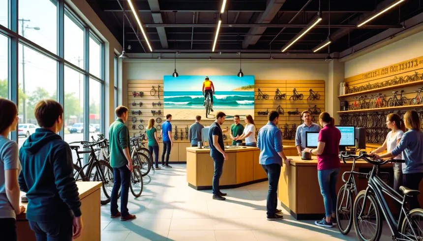

ABOUT ME
As a film enthusiast, I have a deep appreciation for storytelling—how every frame, detail, and decision shapes the bigger picture. That same passion drives my work as a Data Analyst, where I uncover meaningful narratives hidden within data to inform decisions and inspire action. I’m dedicated to transforming raw numbers into clear, impactful insights that tell a compelling story.

Starbucks Locations Worldwide Project
Built an interactive Tableau dashboard mapping Starbucks’ global store distribution, turning raw location data into actionable insights through clear, executive-ready visualizations.
Analyzed and visualized global video game sales (~16.6k records) using Excel, identifying trends, top performers, and market insights through dashboards and executive-ready reports.

Analyzed bike sales data to identify customer demographics, purchasing patterns, and high-value segments. Built an interactive Tableau dashboard to visualize trends and KPIs, and translated insights into actionable marketing and sales strategies for non-technical stakeholders.
Data Positions Survey Project
Cleaned and analyzed survey data from data professionals, creating a Power BI dashboard with KPIs and visuals to highlight trends in roles, salaries, and demographics.
Analyzed global layoff data using SQL and Tableau to uncover key trends and insights. Cleaned and standardized raw data in SQL, handled duplicates and missing values, and conducted exploratory analysis across companies, industries, countries, and time. Built an interactive Tableau dashboard to clearly communicate global layoff patterns and high-impact organizations.
Bike Sales Demographics Project
Analyzed bike sales using Excel by cleaning and standardizing demographic data, applying PivotTables to compare buyers and non-buyers, and identifying key customer personas. Built a user-friendly dashboard to visualize income trends, purchasing behavior, and regional insights to support business strategy.
Amazon Web Scraping Project
Built a Python web scraper using Requests, BeautifulSoup, and Pandas to collect and analyze Amazon product data for market research and competitive pricing insights.
Built Tableau dashboard on Seattle AirBnB data to reveal pricing and geographic trends, supporting strategic pricing, marketing, and location decisions.

Performed exploratory data analysis with Python to identify key revenue drivers in the movie industry, using pandas, NumPy, and visualization tools like seaborn and matplotlib. Built interactive Tableau dashboards to present global film industry trends and correlation insights.
Nashville Housing Project

Cleaned and structured Nashville Housing data using SQL (SSMS) to improve accuracy and prepare it for analysis. Created an interactive Tableau dashboard to highlight key trends in the local housing market.
COVID-19 Population Project

Explored and cleaned global COVID-19 data using SQL (SSMS) and Excel to prepare structured datasets for trend analysis and public health insights. Designed interactive Tableau dashboards to visualize the pandemic’s global impact.
Historical Analysis of Video Content Platforms

Examined how UX strategies on platforms like YouTube and TikTok have evolved to boost engagement through AI, mobile design, and real-time features. Highlighted user-centric design as key to the future of digital media.
Enhancing Data Visualization Accessibility

Researched how color blindness affects data visualization and emphasizes the need for inclusive design practices to improve accessibility. Discussed adaptive strategies and emerging technologies that not only aid individuals with color vision deficiencies but also enhance usability for all users.